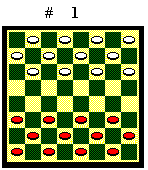
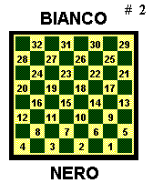
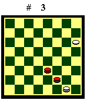
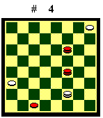
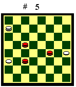
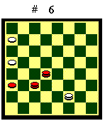
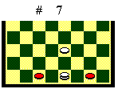

IL GIOCO INGLESE
(Ultima revisione il 02.11.2003)
La dama è un gioco popolare di
origine europea e di lunghissima tradizione. Proprio a causa della sua
popolarità, non si è arrivati ad una standardizzazione delle
regole a livello mondiale e quindi sussistono tuttora, nei vari paesi,
differenti sistemi di gioco, anche abbastanza diversi fra loro. Ad esempio,
esiste la dama italiana, inglese, russa, brasiliana, spagnola, ecc. Questo
stato di cose è avvertito come un difetto soprattutto oggi, in epoca
di globalizzazione, perché limita le competizioni internazionali
e quindi lo scambio di esperienze e idee, anche fra persone di paesi e
culture diverse, che deve accompagnare l'attività sportiva. Come
rimedio, la Federazione Mondiale del Gioco della Dama (FMJD) ha imposto
una standardizzazione "dall'alto", stabilendo che le competizioni
internazionali si debbano tenere in una delle versioni del gioco, battezzata
"Dama Internazionale", diffusa soprattutto in Olanda e Russia.
Purtroppo questo sistema di gioco è molto diverso dal gioco italiano
e stenta a diffondersi fra il grande pubblico.
Accanto a questo tentativo "dall'alto", negli ultimi anni, grazie a internet e alla possibilità di giocare on line, in tempo reale, con persone di tutto il mondo, si sta sviluppando un processo di unificazione "dal basso", che consiste nell'adozione "tout court" della dama inglese ("Checkers" negli USA e "Draugths" in Gran Bretagna). Accade che siti WEB statunitensi molto noti (es. Microsoft e Yahoo!), che consentono di giocare a dama inglese, siano frequentati da migliaia di damisti, in special modo delle nazioni dell'ex impero britannico, dove tale versione del gioco è popolare, dagli USA all'Australia, dal Sudafrica all'India, dalla Gran Bretagna alla Nuova Zelanda a Malta, ecc. Ma sono presenti anche molti giocatori di altre nazioni, fra cui tanti italiani, che, in sostanza, hanno imparato a giocare a dama non dal nonno, come si usava una volta, ma su internet. Per nostra fortuna il gioco inglese è molto simile a quello italiano. Di seguito confronto in dettaglio le regole e la strategia delle due versioni, per mettere in grado il giocatore italiano, di padroneggiare, con il bagaglio tecnico già acquisito, anche il gioco inglese.
Regole
La differenza più evidente fra
le due versioni è che nel gioco inglese la pedina (man) può
mangiare la dama (king). L'altra differenza sostanziale è che nel
gioco inglese, se un giocatore può effettuare più prese,
è libero di scegliere quella che preferisce, senza dover rispettare
alcuna precedenza.

Infine, alcune differenze solo formali: nel gioco inglese la damiera è ruotata di 90° gradi e la posizione iniziale è quella del Diagramma 1;la mossa d'inizio, anziché al bianco, spetta al nero;

la numerazione per la trascrizione delle mosse è quella del Diagramma 2.Per il resto, le regole della dama
inglese e italiana sono identiche.
Apertura e centro partita
La strategia è identica nelle
due versioni del gioco e le idee esposte nei miei "Motivi di strategia
delle aperture" sono integralmente valide. Anche le linee di gioco
sono generalmente interscambiabili, sebbene vadano verificate caso per
caso, a motivo delle differenti regole di precedenza nelle prese.
Finale
Il fatto che la pedina possa mangiare
la dama influenza la tattica, ma non la strategia. L'obiettivo rimane lo
stesso: fare più dame dell'avversario. Anche nel gioco inglese,
a parità di pezzi, con due dame in più generalmente si vince
ma, soprattutto quando il partito in vantaggio non ha la mossa in favore,
la manovra è di solito più elaborata, a causa della minor
forza della dama rispetto alla pedina. Per lo stesso motivo, nel gioco
inglese le pari sotto pezzo sono molto più rare che nel gioco italiano
e il partito in vantaggio materiale vince quasi sempre.
Finali teorici (nelle linee di gioco, per convenzione, il Nero è il partito in vantaggio)
La Teoria della mossa e i finali
teorici di sole dame sono identici nelle due versioni. La Seconda
e Terza Posizione del gioco italiano sono valide anche nel gioco inglese,
ma nei testi inglesi non sono ritenute posizioni notevoli e non vengono
considerate.
La Prima posizione, che nei testi damistici inglesi è chiamata "First Position", ha gli stessi casi di vincita del gioco italiano, anche se con linee di gioco diverse.

Diagramma 3. Il Bianco muove (il Nero ha la mossa): 1.1-5 (se 21-17, 6-9, 17-13, 9-5 Nv) 2.6-1 5-9 3.10-15 (se 1-5?, 9-14 pari) 9-5 (A) (se 21-17, 15-18 ecc. stessa linea del tronco) 4.15-18 5-9 5.1-5 9-6 (B) 6.18-15 21-17 7.5-1 6-9 8.15-18 9-5 (se 17-14, 1-6 Nv) 9.18-22! (se 6-1?, 17-14 pari. Se 18-15?, 17-14 ecc. il Bianco dama la pedina e patta) 17-14 10.1-6 5-1 11.6-2 1-5 12.22-18 14-9 13.18-14 il Nero vince.(A) - 3.9-14 4.1-5 21-17 5.5-1 17-13 (se 14-9, 15-18, ecc. stessa linea del tronco) 6.1-5 14-17 (se 13-9, 15-10 Nv) 7.15-10 17-22 8.10-14 22-25 9.5-1 25-22 10.1-6 22-25 11.6-10 25-22 12.10-15 22-25 13.15-18 25-21 14.18-22 il Nero vince.
(B) - 5.9-13 6.18-22 21-17 7.5-1
17-14 8.22-18 14-9 9.1-5 9-6 10.5-1 6-2 11.18-14 2-7 12.14-9 il Nero vince.
La Quarta Posizione, che nei testi inglesi è chiamata "Second Position", è vinta dal partito in vantaggio ma, nel gioco inglese, richiede una manovra più elaborata.

Se il Nero non ha la mossa in favore, deve evitare che la dama bianca raggiunga il biscacco superiore perché patta. Con la dama bianca nel biscacco inferiore, anche con la mossa in sfavore, le dame nere vincono, con l'appoggio della pedina in 3.Diagramma 4. Il Nero muove
(il Bianco ha la mossa): 1.22-17 6-1 2.14-10 1-5 3.17-14 5-1 4.14-9 1-5
5.9-6 29-25 (se 5-1, 10-7 Nv) 6.10-14 5-1 7.6-9 1-5 8.9-13 5-1 9.13-17
25-21 10.17-22 1-5 11.22-18 5-1 12.18-15 1-6 13.15-11 6-1 (se 6-2, 14-9,
21-17, 11-15, 17-13, 15-10 Nv) 14.11-7 1-6 15.7-2 6-1 16.14-10 1-5 (se
21-17, 2-7, 1-5, 10-6 stessa linea del tronco) 17.2-6 21-17 18.10-7 17-13
(se 5-1, 6-9, 1-5, 9-13 ecc. Nv) 19.6-1 5-9 20.7-10 9-6 21.10-14 6-2 22.14-18
13-9 23.18-14 il Nero vince. 
Diagramma 5. Il Bianco muove (il Nero ha la mossa): 1.28-32 2.19-15 32-28 3.15-10 28-32 4.10-6 (prende la casa chiave) 32-28 5.14-18 28-32 6.18-23 32-28 7.23-27 28-32 8.27-24 32-28 9.11-16 (primo cambio) 28x19 10.16x23 12-8 11.23-18 8-3 12.18-14 3-7 13.6-1 la Terza Posizione "italiana": ovunque il Bianco muova la dama, il Nero dà il secondo cambio con 14-9, riprende la mossa, chiude la dama bianca e vince.
Se la dama bianca è nel biscacco
inferiore, al Nero, per evitare complicazioni, conviene spingere la dama
bianca nel biscacco superiore e vincere con la manovra del tronco.
Riporto anche un finale di 2 dame e 1 pedina contro 1 dama e 2 pedine, molto istruttivo per comprendere il diverso tipo di manovra nel gioco inglese rispetto al gioco italiano.

Diagramma 6. Il Nero muove e vince (il Bianco ha la mossa): (nel gioco italiano il Nero vincerebbe in modo banale: muovendo 11-16 fa in modo che la dama in 15 acquisti la mossa sulla dama Bianca e la allontani, poi porta a dama la pedina in 12, quindi, avendo tre dame, con una ferma le pedine bianche, con le altre due dame chiude la dama bianca e vince. Nel gioco inglese invece, con la pedina che mangia la dama, specie nei casi come questo, in cui il partito più debole ha la mossa in favore, la manovra per vincere è più complessa) 1.15-18 (A) (non può 11-16 come nel gioco italiano) 6-10 2.18-23 10-14 3.11-15 (23-27?, 14-18 il Nero divide le dame e patta; può seguire 12-16, 28-24, 27-32, 18-15 ecc. e siamo alla linea A) 14-9 4.23-27 9-14 5.27-32 14-9 6.15-11 9-14 7.12-16 14-18 (ora il Bianco non può alzare la pedina con 28-24 perché, con 32-28 il Nero la cattura) 8.16-19 ecc. Il Nero fa tre dame, ne porta una in 19 a guardia delle pedina bianche, e con le altre due chiude la dama bianca e vince.(A) - 1.12-16? 28-24 2.15-18 6-10
3.18-23 10-14 (se 10-15? [troppo presto per il baratto: la dama nera in
23 è troppo vicina], X, 18-15, 11-7, 23-18, 7-2, 15-10, 24-19, 18-14,
19-16, 14-9, 16-12, 9-13, 12-8, 10-6 il Nero prende la mossa, chiude la
dama bianca e vince. Se 24-19?, 11-15, 19x12 ecc. Il Nero, con la mossa
in favore, chiude i pezzi bianchi e vince) 4.23-27 14-18 5.27-32 18-15
(il momento giusto per il baratto: con la dama nera in 32, troppo lontana
per portarsi in azione) 6.11x18 20x11 7.32-27 24-20 8.27-23 11-7 9.18-15
7-2 10.15-10 20-16 11.23-18 (il Bianco ha la mossa, quindi il Nero non
può chiuderlo con 23-19 ecc. L'unico modo che ha per tentare la
vittoria è invertire la mossa con un cambio) 16-12 12.18-14 12-8
13.14-9 8-3 14.9-13 2-7 il Bianco ha avuto il tempo per portare un pezzo
in 3, in modo da evitare il cambio del Nero alla dama in 2, con il quale
avrebbe preso la mossa e vinto. Pari.

Inoltre è utile avere cognizione di posizioni del tipo del Diagramma 7, che si presentano frequentemente. Le pedine in 1, 3 e 10 formano il cosiddetto "Bridge" (ponte). Per superare le pedine nere in 1 e 3 e damare, il Bianco è costretto a portare una pedina in 10 ma, a differenza del gioco italiano, la dama e la pedina bianche non hanno la possibilità di "smontare" il ponte con un cambio a una delle due pedine nere, e la pedina bianca in 10 resta pericolosamente esposta ad attacchi di eventuali dame avversarie.I finali teorici citati sono un bagaglio conoscitivo sufficiente per un giocatore di buon livello. Rassegne più complete si trovano sul sito WEB della "American Checker Federation" (ACF) o su siti damistici da essa raccomandati.